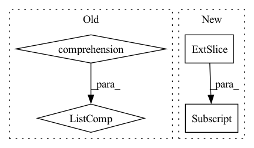

Pattern ID :2278
Before Change
// [n, c, h, w]
quantizeds.append(deTransformed)
samples = [s.argmax(-1).permute(1, 0).reshape(n, h, w) for s in samples]
logits = [l.permute(1, 0, 2).reshape(n, h, w, k) for l in logits]
// codes.append(samples.argmax(-1).permute(1, 0).reshape(n, h, w))
// logits.append(logit.permute(1, 0, 2).reshape(n, h, w, k))
return quantizeds, codes, logits
After Change
for i, (xRaw, k) in enumerate(zip(latents, self._k)):
n, c, h, w = xRaw.shape
// [k, 1, c]
codebook = getattr(self, "codebook")[:, None, :]
// [n, c, h, w] -> [h, w, n, c]
encoderIn = xRaw.permute(2, 3, 0, 1)
// encoderIn = xRaw.permute(2, 3, 0, 1)
// [h, w, n, c] -> [h*w, n, c]In pattern: SUPERPATTERN
Frequency: 3
Non-data size: 4
Instances Fragment ID: 14290554
Project Name: xiaosu-zhu/mcquic
Commit Name: a4a40624c11a9779699f4a37cccb5b5ed8bc5048
Time: 2021-04-10
Author: xiaosu.zhu@outlook.com
File Name: src/mcqc/models/quantizer.py
M Class Name: TransformerQuantizer
N Class Name: TransformerQuantizer
M Method Name: forward(3)
N Method Name: forward(3)
M Parent Class: nn.Module
N Parent Class: nn.Module
M File Name: src/mcqc/models/quantizer.py
N File Name: src/mcqc/models/quantizer.py
M Start Line: 271
M End Line: 298
N Start Line: 504
N End Line: 534
Before Change
self.revert_projs.append(nn.Sequential(*tmp))
def forward(self, x):
outs_b = [block(x_) for x_, block in zip(x, self.blocks)]
// only take the cls token out
proj_cls_token = [proj(x[:, 0:1]) for x, proj in zip(outs_b, self.projs)]
// cross attention
outs = []After Change
// only take the cls token out
proj_cls_token = torch.jit.annotate(List[torch.Tensor], [])
for i, proj in enumerate(self.projs):
proj_cls_token.append(proj(outs_b[i][:, 0:1, ...] ))
// cross attention
outs = [] Fragment ID: 14290556
Project Name: feng-lab/pytorch-image-models
Commit Name: bb50b69a57229a3ee30bbd460539c9a45e508532
Time: 2021-09-08
Author: chenrich@us.ibm.com
File Name: timm/models/crossvit.py
M Class Name: MultiScaleBlock
N Class Name: MultiScaleBlock
M Method Name: forward(2)
N Method Name: forward(2)
M Parent Class: nn.Module
N Parent Class: nn.Module
M File Name: timm/models/crossvit.py
N File Name: timm/models/crossvit.py
M Start Line: 213
M End Line: 222
N Start Line: 205
N End Line: 220
Before Change
hs = [torch.randn(x.size(0), self.args["hidden_size"]).to(self.device) for _ in range(self.args["num_units"])]
cs = None
if self.args["rnn_cell"] == "LSTM":
cs = [torch.randn(x.size(0), self.args["hidden_size"]).to(self.device) for _ in range(self.args["num_units"])]
xs = torch.split(x, 1, 1)
//print(xs[0].size())
//xs = [torch.squeeze(k) for k in xs]After Change
preds = self.Linear(hs.contiguous().view(x.size(0), -1))
preds_.append(preds)
if y is not None:
loss+=self.Loss(preds, y[:,i] .squeeze().long())
preds_ = torch.stack(preds_, dim = 1)
if y is not None:
loss/=len(xs) Fragment ID: 14290557
Project Name: dido1998/recurrent-independent-mechanisms
Commit Name: d87a800096eaa36730cbabac535eea24973f3799
Time: 2020-02-11
Author: adidolkar123@gmail.com
File Name: networks.py
M Class Name: CopyingModel
N Class Name: CopyingModel
M Method Name: forward(5)
N Method Name: forward(5)
M Parent Class: nn.Module
N Parent Class: nn.Module
M File Name: networks.py
N File Name: networks.py
M Start Line: 255
M End Line: 276
N Start Line: 291
N End Line: 313